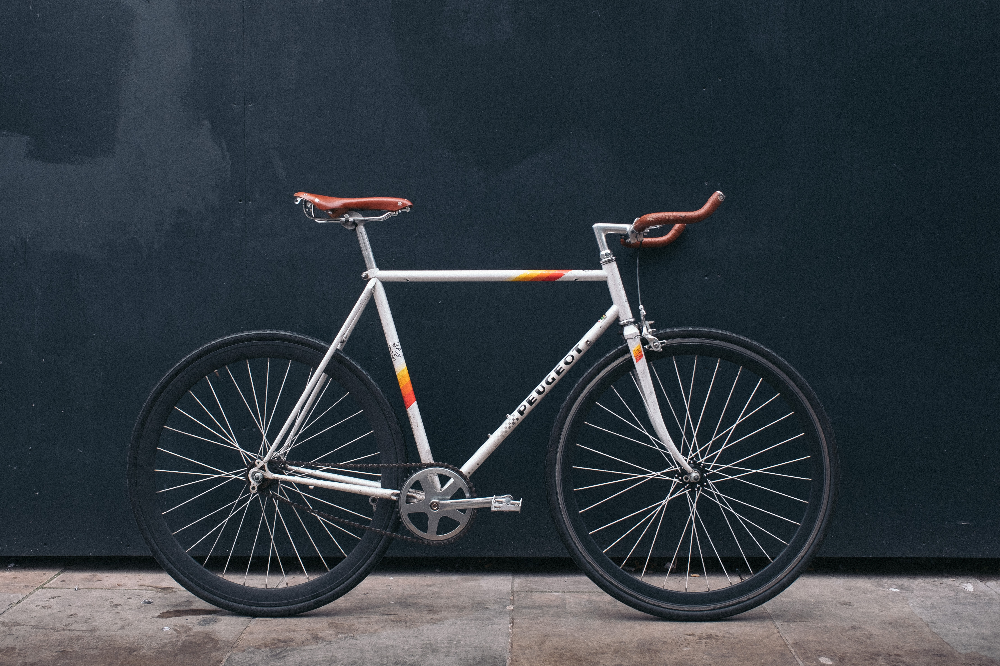
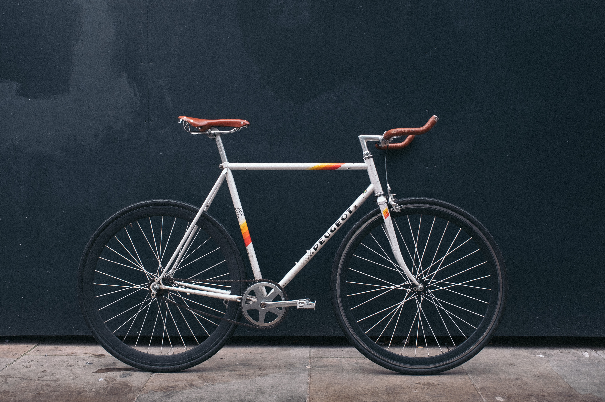

About us
We offer eco-friendly, guided cycling tours around town


 

Who and what are we?
Welcome to the official website of Re-Cycle Tours (City, Cultural and Ecological Tours, known locally as Re-Cycle). Famed for the original eco/educational cycling tour since 1999, we proudly ensure visitors see the 'Real city' with our range of Cycling Tours.